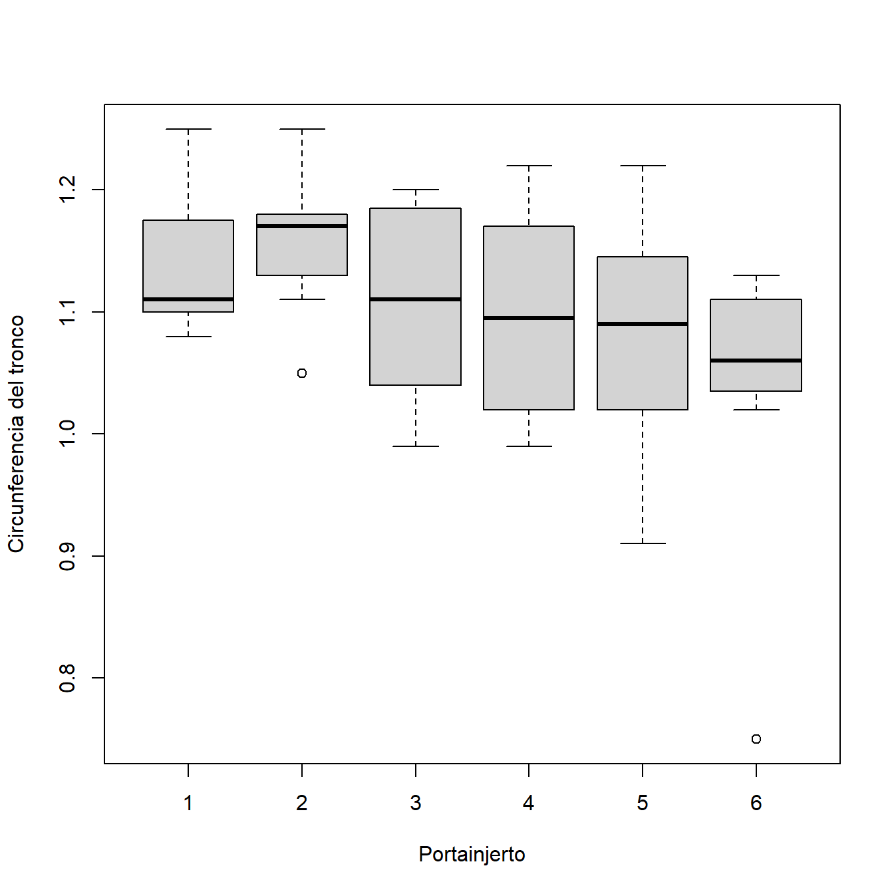

Capítulo3 Análisis Multivariante de la Varianza
En este capítulo vemos la extensión del análisis de la varianza univariante (ANOVA) al caso de que la variable respuesta es multivariante (MANOVA). En primer lugar repasaremos los aspectos fundamentales del caso unidimensional. Para el caso multidimensional veremos que, en lugar del test \(F\), surgen los test de la \(\Lambda\) de Wilks y sus alternativas.
3.1 Revisión del modelo de análisis de la varianza univariante ANOVA
En el modelo de análisis de la varianza univariante, disponemos de \(k\) muestras independientes que provienen de poblaciones normales con la misma varianza (modelo homocedástico). Es decir,
\[\begin{array}{cccccc} y_{11} & y_{12} & \cdots & y_{1\,n_1} & \mbox{de una población} & N\left(\mu_1,\sigma^2\right), \\ y_{21} & y_{22} & \cdots & y_{2\,n_2} & \mbox{de una población} & N\left(\mu_2,\sigma^2\right), \\ \cdots & \cdots & \cdots & \cdots & \cdots & \cdots \\ y_{k1} & y_{k2} & \cdots & y_{k\,n_k} &\mbox{de una población} & N\left(\mu_k,\sigma^2\right). \end{array}\]
Cada una de las \(k\) muestras (también denominadas grupos) está formada por variables independientes y con la misma distribución. Se supone además que las \(k\) muestras son independientes entre sí. Los grupos pueden corresponder, por ejemplo, a diferentes tratamientos aplicados por el investigador en un experimento. El primer objetivo de un modelo de análisis de la varianza es contrastar la hipótesis nula de que todas las medias son iguales. Planteamos así el contraste:
\[H_0: \mu_1=\mu_2=\cdots=\mu_k.\]
Ejemplo. En el trabajo clásico de Andrews and Herzberg (1985), se
comparan manzanos sobre seis tipos de portainjertos. En concreto, se
analizan ocho manzanos sobre cada tipo de portainjerto. Para cada
manzano se determina la circunferencia del tronco (mm \(\times\) 100) a
los 4 años. Los datos se encuentran en el fichero tronco.txt.
> tronco <- read.table("data/tronco.txt", header = TRUE)
> head(tronco)
portainjerto cir4
1 1 1.11
2 1 1.19
3 1 1.09
4 1 1.25
5 1 1.11
6 1 1.08
> table(tronco[, 1])
1 2 3 4 5 6
8 8 8 8 8 8 En este caso \(k=6\) (tipos de portainjertos) y \(n_i=8\) para \(i=1,\ldots,6\) (número de árboles para cada tipo de portainjerto). El objetivo es determinar si existen diferencias significativas en el crecimiento de los manzanos debidas al tipo de portainjerto, ver Figura 3.1

Figura 3.1: Boxplot para la circunferencia de tronco a los 4 años en cada tipo de portainjerto.
Denotamos mediante \(\overline{y}_{i\bullet}\) a la media muestral procedente de la población \(i\)-ésima, es decir,
\[\overline{y}_{i\bullet}=\frac{1}{n_i}\sum_{j=1}^{n_i} y_{ij}\] para \(i=1,\ldots,k\). Sea \(n=n_1+\ldots+n_k\) el número total de datos. Entonces, la media global de la muestra se calcula como:
\[\overline{y}_{\bullet\bullet} =\frac{1}{n}\sum_{i=1}^k \sum_{j=1}^{n_i} y_{ij}.\]
Se puede expresar el modelo de análisis multivariante de la varianza como un caso particular del modelo de regresión lineal. El modelo para cada observación es:
\[y_{ij}=\mu+\alpha_i+\epsilon_{ij}=\mu_i+\epsilon_{ij}\] con \(i=1,\ldots,k\) y \(j=1,\ldots, n_i\). En el modelo, \(\mu_i=\mu+\alpha_i\) es la media de la población \(i\)-ésima.
Queremos comparar las medias muestrales \(\overline{y}_{i\bullet}\) para ver si son suficientemente distintas como para llevarnos a pensar que las medias de cada población difieren. Para determinar si hay diferencias significativas entre las respuestas medias a distintos niveles del factor, el ANOVA descompone la variabilidad total. La variabilidad total, medida a través de la desviación cuadrática de los datos a la media global, admite la siguiente descomposición:
\[\sum_{i=1}^k \sum_{j=1}^{n_i} \left( y_{ij} - \overline y_{\bullet\bullet}\right)^2 =\sum_{i=1}^k \sum_{j=1}^{n_i} \left( y_{ij} - \overline{y}_{i\bullet} \right)^2 + \sum_{i=1}^k \sum_{j=1}^{n_i} \left( \overline{y}_{i\bullet} - \overline y_{\bullet\bullet} \right)^2.\]
Al igual que en regresión, lo representamos mediante la tabla de análisis de la varianza.
| Fuente de variación | Suma de cuadrados | Grados de libertad |
|---|---|---|
| Entre poblaciones (VE) | \({\sum_{i=1}^k {n_i} \left(\bar y_{i\bullet}-\bar y_{\bullet\bullet}\right)^2}\) | \(k-1\) |
| Error (VNE) | \({\sum_{i=1}^k \sum_{j=1}^{n_i} \left( y_{ij}-\bar y_{i\bullet}\right)^2}\) | \(n-k\) |
| Total (VT) | \({\sum_{i=1}^k \sum_{j=1}^{n_i} \left( y_{ij}-\bar y_{\bullet\bullet}\right)^2}\) | \(n-1\) |
Nos fijamos en que VE representa las desviaciones de las medias muestrales de cada población respecto a la media global. Sirve por lo tanto como medición de la variabilidad entre poblaciones (inter-grupos). Además, VNE representa las desviaciones de cada dato respecto a la media muestral de la población de la que procede. Es útil como medida de la variabilidad interna (intra-grupos), presente entre los individuos de la misma población. Para efectuar el contraste de igualdad de las medias debemos considerar un estadístico que mida la discrepancia respecto a la hipótesis nula de igualdad. Si las medias fueran iguales, las desviaciones entre poblaciones no deberían ser muy grandes, comparadas con las desviaciones dentro de cada población. Un estadístico razonable para el contraste es
\[F=\frac{VE/(k-1)}{{VNE}/(n-k)}=\frac{\sum_{i=1}^k \sum_{j=1}^{n_i} \left(\bar y_{i\bullet}-\bar y_{\bullet\bullet}\right)^2/(k-1)} {\sum_{i=1}^k \sum_{j=1}^{n_i} \left( y_{ij}-\bar y_{i\bullet}\right)^2/(n-k)}.\] Si la hipótesis nula \(H_0: \mu_1=\mu_2=\cdots=\mu_k\) es cierta, \(F\) presenta una distribución \(F\) de Snédecor \(F\in F_{(k-1),(n-k)}\). Rechazaremos \(H_0\) cuando para valores grandes de \(F\).
Ejemplo. Volvemos sobre el ejemplo de manzanos sobre diferentes tipos de portainjertos. Existen distintas formas de realizar un ANOVA en R. Esta es una de ellas:
> x <- factor(tronco[, 1])
> y <- tronco[, 2]
> z <- lm(y ~ x)
> anova(z)
Analysis of Variance Table
Response: y
Df Sum Sq Mean Sq F value Pr(>F)
x 5 0.07356 0.0147121 1.931 0.1094
Residuals 42 0.31999 0.0076187 Vemos que el \(p\)-valor indica que no hay evidencias significativas para rechazar la hipótesis nula de igualdad de medias.
3.2 MANOVA con un factor de variación
En general, cuando disponemos de una muestra, no medimos una única variable. Lo más habitual es realizar mediciones de diversas variables dependientes sobre cada unidad muestral.
Ejemplo. En el trabajo clásico de Andrews and Herzberg (1985), se
comparan manzanos sobre seis tipos de portainjertos. En concreto, se
analizan ocho manzanos sobre cada tipo de portainjerto. Para cada
manzano se determina \(\bm{y}=(y_1,\ldots,y_4)^\prime\), siendo \(y_1\) la
circunferencia del tronco (mm \(\times\) 100) a los 4 años, \(y_2\) el
crecimiento (m) a los 4 años, \(y_3\) la circunferencia del tronco (mm
\(\times\) 100) a los 15 años e \(y_4\) el peso del árbol (lb \(\times\) 1000)
a los 15 años. Los datos se encuentran en el fichero manzanos.txt.
> manzanos <- read.table("data/manzanos.txt", header = TRUE)
> head(manzanos)
portainjerto cir4 crec4 cir15 peso15
1 1 1.11 2.569 3.58 0.760
2 1 1.19 2.928 3.75 0.821
3 1 1.09 2.865 3.93 0.928
4 1 1.25 3.844 3.94 1.009
5 1 1.11 3.027 3.60 0.766
6 1 1.08 2.336 3.51 0.726Se trata de comparar las medias de \(k\) poblaciones normales multivariantes independientes y con matriz de dispersión común. Consideremos entonces \(k\) muestras independientes
\[\begin{array}{cccccc} \bm{y_{11}} & \bm{y_{12}} & \cdots & \bm{y_{1n_1}} & \mbox{de una población} & N_d(\bm{\mu_1},\bm\Sigma), \\ \bm{y_{21}} & \bm{y_{22}} & \cdots & \bm{y_{2n_2}} & \mbox{de una población} & N_d(\bm{\mu_2},\bm\Sigma), \\ \cdots & \cdots & \cdots & \cdots & \cdots & \cdots \\ \bm{y_{k1}} & \bm{y_{k2}} & \cdots & \bm{y_{kn_k}} &\mbox{de una población} & N_d(\bm{\mu_k},\bm\Sigma). \end{array}\]
Cada una de las \(k\) muestras está formada por vectores independientes y con la misma distribución. Se trata, por tanto, de \(k\) muestras aleatorias simples. Además se supone que las \(k\) muestras son, entre sí, independientes. La hipótesis de homocedasticidad consiste ahora en que la matriz de covarianzas se supone que es la misma en todas las poblaciones. Recuerda que la homocedasticidad se puede contrastar mediante un test de igualdad de las matrices de covarianzas.
3.2.1 Descomposición de la variabilidad. Contraste de igualdad de medias
Igual que ocurría en el caso univariante, se puede expresar el modelo de análisis multivariante de la varianza como un caso particular del modelo lineal múltiple (la variable respuesta es un vector \(d\)-dimensional). Para cada observación se tiene,
\[\bm{y_{ij}}=\bm{\mu}+\bm{\alpha_i}+\bm{\epsilon_{ij}}=\bm{\mu_i}+\bm{\epsilon_{ij}}\] con \(i=1,\ldots,k\) y \(j=1,\ldots, n_i\). En el modelo, \(\bm{\mu_i}=\bm{\mu}+\bm{\alpha_i}\) es el vector de medias de la población \(i\)-ésima.
El objetivo del modelo de análisis de la varianza multivariante es contrastar la hipótesis nula de que los vectores de medias son iguales. Planteamos así el contraste:
\[H_0: \bm{\mu_1}=\bm{\mu_2}=\cdots=\bm{\mu_k}.\]
Es decir,
\[H_0: \left(\begin{array}{c}\mu_{11}\\ \mu_{12}\\\vdots\\ \mu_{1d}\end{array}\right)=\left(\begin{array}{c}\mu_{21}\\ \mu_{22}\\\vdots\\ \mu_{2d}\end{array}\right)=\cdots=\left(\begin{array}{c}\mu_{k1}\\ \mu_{k2}\\\vdots\\ \mu_{kd}\end{array}\right).\]
Al igual que en el caso univariante, podremos calcular la media global de la muestra y las medias muestrales por grupo. Así denotamos mediante \(\bm{\overline{y}_{i\bullet}}\) a la media muestral procedente de la población \(i\)-ésima, es decir,
\[\bm{\overline{y}_{i\bullet}}=\frac{1}{n_i}\sum_{j=1}^{n_i} \bm{y_{ij}}\] para \(i=1,\ldots,k\). Sea \(n=n_1+\ldots+n_k\) el número total de datos. Entonces, la media global de la muestra se calcula como: \[\bm{\overline{y}_{\bullet\bullet}} =\frac{1}{n}\sum_{i=1}^k \sum_{j=1}^{n_i} \bm{y_{ij}}\]
Para determinar si hay diferencias significativas entre las respuestas medias a distintos niveles del factor, el MANOVA descompone la variabilidad total de forma similar a como se hacía en el ANOVA. La diferencia está en que ahora la variabilidad total se medirá mediante la siguiente matriz \(d\times d\):
\[\sum_{i=1}^k \sum_{j=1}^{n_i} \left( \bm{y_{ij}}-\bm{\overline{y}_{\bullet\bullet}}\right) \left( \bm{y_{ij}}-\bm{\overline{y}_{\bullet\bullet}}\right)^\prime{}.\] Por analogía con el caso univariante, en el que se comparaban la variabilidad inter-grupos con la variabilidad intra-grupos, se calculan ahora las matrices
\[\bm{H}=\sum_{i=1}^kn_i(\bm{\overline{y}_{i\bullet}}-\bm{\overline{y}_{\bullet\bullet}})(\bm{\overline{y}_{i\bullet}}-\bm{\overline{y}_{\bullet\bullet}})^\prime{}\] y
\[\bm{E} = \sum_{i=1}^k \sum_{j=1}^{n_i} \left( \bm{y_{ij}}- \bm{\overline{y}_{i\bullet}}\right) \left( \bm{y_{ij}}- \bm{\overline{y}_{i\bullet}}\right)^\prime{}.\]
Se muestra a continuación la tabla del análisis multivariante de la varianza o tabla MANOVA:
| Fuente de variación | Matriz de covarianzas | Grados de libertad |
|---|---|---|
| Entre poblaciones | \({ \bm{H}=\sum_{i=1}^kn_i(\bm{\overline{y}_{i\bullet}}-\bm{\overline{y}_{\bullet\bullet}})(\bm{\overline{y}_{i\bullet}}-\bm{\overline{y}_{\bullet\bullet}})^\prime{}}\) | \(k-1\) |
| Error | \({\bm{E} = \sum_{i=1}^k \sum_{j=1}^{n_i}\left( \bm{y_{ij}}- \bm{\overline{y}_{i\bullet}}\right)\left( \bm{y_{ij}}- \bm{\overline{y}_{i\bullet}}\right)^\prime{}}\) | \({\sum_{i=1}^k \left(n_i-1\right)}\) |
| Total | \({\bm{E_H} = \sum_{i=1}^k \sum_{j=1}^{n_i}\left( \bm{y_{ij}}-\bm{\overline{y}_{\bullet\bullet}}\right)\left( \bm{y_{ij}}-\bm{\overline{y}_{\bullet\bullet}}\right)^\prime{}}\) | \({\sum_{i=1}^k n_i-1}\) |
Observamos que esta tabla no es más que una extensión de la tabla ANOVA al caso multivariante. El sentido común nos invita a rechazar la hipótesis nula cuando la variabilidad proveniente de las diferencias entre poblaciones (que medimos mediante la matriz \(\bm{H}\)) sea grande comparada con la proveniente del error (medida por \(\bm{E}\)).
3.2.2 El estadístico \(\Lambda\) de Wilks
El contraste de razón de verosimiltudes para el contraste \(H_0: \bm{\mu_1}=\bm{\mu_2}=\cdots=\bm{\mu_k}\) viene dado por
\[\Lambda=\frac{|\bm{E}|}{|\bm{E}+\bm{H}|}.\]
Este estadístico, conocido como estadístico de Wilks, compara la matriz \(\bm{E}\), que mide la variabilidad intra-grupos, con la matriz \(\bm{E_H}=\bm{E}+\bm{H}\), que mide la variabilidad total8. Se puede demostrar que, bajo la hipótesis nula,
\[\begin{aligned} \bm{H} &\in & \mbox{Wishart}_d(\bm\Sigma,k-1) \\ \bm{E} &\in & \mbox{Wishart}_d(\bm\Sigma,n-k)\end{aligned}\] y además son independientes. Entonces tenemos que9
\[\frac{|\bm{E}|}{|\bm{E}+\bm{H}|}\in \Lambda(d,k-1,n-k).\] Por tanto, rechazaremos la hipótesis nula cuando el estadístico \(|\bm{E}|/|\bm{E}+\bm{H}|\) tome un valor menor que el cuantil \(\alpha\) de la distribución \(\Lambda(d,k-1,n-k)\), siendo \(\alpha\) el nivel de significación fijado de antemano. El estadístico se puede aproximar por una distribución \(F\) de Snédecor.
Ejemplo. Volvemos al ejemplo sobre manzanos. Se trata de contrastar \(H_0: \bm{\mu_1}=\bm{\mu_2}=\cdots=\bm{\mu_6}\), donde para cada \(i\) el vector \(\bm{\mu_i}=(\mu_{i1},\ldots,\mu{i4})^\prime\) representa el vector de medias de \(\bm{y}=(y_1,\ldots,y_4)^\prime{}\) para el tipo \(i\) de portainjerto. Los datos son:
> x <- factor(manzanos[, 1])
> y <- as.matrix(manzanos[, 2:5])
> n <- dim(y)[1]
> d <- dim(y)[2]
> n
[1] 48
> d
[1] 4Calculamos a continuación la media global de la muestra \(\bm{\overline{y}_{\bullet\bullet}}\) y las medias \(\bm{\overline{y}_{i\bullet}}\) correspondientes a cada grupo:
> medy <- apply(y, 2, mean)
> medy
cir4 crec4 cir15 peso15
1.102708 2.758854 4.087292 1.083000
> medyi <- t(apply(y, 2, tapply, x, mean))
> medyi
1 2 3 4 5 6
cir4 1.137500 1.157500 1.107500 1.09750 1.08000 1.036250
crec4 2.977125 3.109125 2.815250 2.87975 2.55725 2.214625
cir15 3.738750 4.515000 4.455000 3.90625 4.31250 3.596250
peso15 0.871125 1.280500 1.391375 1.03900 1.18100 0.735000A continuación, realizamos el MANOVA:
> z <- lm(y ~ x)
> summary(manova(z), test = c("Wilks"))
Df Wilks approx F num Df den Df Pr(>F)
x 5 0.15401 4.9369 20 130.3 7.714e-09 ***
Residuals 42
---
Signif. codes: 0 '***' 0.001 '**' 0.01 '*' 0.05 '.' 0.1 ' ' 1Comprobamos que el valor del estadístico es \(\Lambda=0.15401\). Para ello, calculamos en primer lugar la matriz \(\bm{E}\)
> res <- z$residuals
> E <- crossprod(res) # Equivalente a (n - 1) * cov(res)
> E
cir4 crec4 cir15 peso15
cir4 0.3199875 1.696564 0.5540875 0.217140
crec4 1.6965637 12.142790 4.3636125 2.110214
cir15 0.5540875 4.363612 4.2908125 2.481656
peso15 0.2171400 2.110214 2.4816562 1.722525Calculamos ahora la matriz \(\bm{E_H}=\bm{E}+\bm{H}\) aplicando la definición.
> resh <- y - matrix(medy, nrow = n, ncol = d, byrow = TRUE)
> EH <- crossprod(resh) # Equivalente a (n - 1) * cov(resh)
> EH
cir4 crec4 cir15 peso15
cir4 0.3935479 2.233949 0.8863521 0.425610
crec4 2.2339490 16.342452 6.7190010 3.747322
cir15 0.8863521 6.719001 10.4047479 6.262700
peso15 0.4256100 3.747322 6.2627000 4.215616Efectivamente, se tiene
En base a la aproximación a la \(F\) de Snédecor proporcionada por R y al \(p\)-valor del estadístico, se rechaza la hipótesis nula de igualdad de los vectores de medias en los 6 tipos de portainjerto.
3.2.3 Test de Roy
Existen otros procedimientos para contrastar \(H_0: \bm{\mu_1}=\bm{\mu_2}=\cdots=\bm{\mu_k}\) que dan lugar a estadísticos de contraste diferentes al \(\Lambda\) de Wilks. Uno de esos procedimientos alternativos es el de unión-intersección.
Un test de unión-intersección para contrastar una hipótesis \(H_0=\cap_a H_{0a}\) es un test cuya región de rechazo es de la forma \(R=\cup_a R_a\), siendo \(R_a\) la región de rechazo para \(H_{0a}\).
Esta idea se aplica en problemas de inferencia multivariante, expresando la hipótesis multivariante como intersección de hipótesis univariantes, para las cuales ya hay tests disponibles. Siguiendo este procedimiento, el test de unión-intersección de Roy tiene como estadístico de contraste:
\[\lambda_1=\mbox{máximo autovalor de}\ \bm{H}\bm{E}^{-1}\] y rechazaremos la hipótesis nula para valores grandes de \(\lambda_1\). De nuevo, se utilizarán aproximaciones de este estadístico a la \(F\) de Snédecor.
Ejemplo. Calculamos, para el ejemplo sobre manzanos, el estadístico de Roy:
> summary(manova(z), test = c("Roy"))
Df Roy approx F num Df den Df Pr(>F)
x 5 1.8757 15.756 5 42 1.002e-08 ***
Residuals 42
---
Signif. codes: 0 '***' 0.001 '**' 0.01 '*' 0.05 '.' 0.1 ' ' 1En base a este estadístico también se rechaza la hipótesis nula de igualdad de medias. Comprobamos que el valor del estadístico es \(\lambda_1=1.8757\). Para ello, calculamos los autovalores de \(\bm{H}\bm{E}^{-1}.\)
3.2.4 Tests de Pillai y Lawley-Hotelling
Existen otros dos tests adicionales para contrastar \(H_0: \bm{\mu_1}=\bm{\mu_2}=\cdots=\bm{\mu_k}\) basados en los autovalores de la matriz \(\bm{H}\bm{E}^{-1}\). El estadístico de Pillai viene dado por
\[V^{(^d)}=\textnormal{traza}\left[\bm{H}(\bm{E}+\bm{H})^{-1}\right]=\sum_{i=1}^d\theta_i=\sum_{i=1}^d\frac{\lambda_i}{1+\lambda_i}\] siendo \(\theta_1,\ldots,\theta_d\) los autovalores de \(\bm{H}(\bm{E}+\bm{H})^{-1}\) y \(\lambda_1,\ldots,\lambda_d\) los autovalores de \(\bm{H}\bm{E}^{-1}\).
El estadístico de Lawley-Hotelling se define como
\[U^{(^d)}=\textnormal{traza}\left[\bm{H}\bm{E}^{-1}\right]=\sum_{i=1}^d\lambda_i\] donde \(\lambda_1,\ldots,\lambda_d\) son los autovalores de \(\bm{H}\bm{E}^{-1}\).
Ejemplo. Calculamos, para el ejemplo sobre manzanos, los estadísticos de Pillai y Lawley-Hotelling y comprobamos los valores obtenidos:
> summary(manova(z), test = c("Pillai"))
Df Pillai approx F num Df den Df Pr(>F)
x 5 1.3055 4.0697 20 168 1.983e-07 ***
Residuals 42
---
Signif. codes: 0 '***' 0.001 '**' 0.01 '*' 0.05 '.' 0.1 ' ' 1
> summary(manova(z), test = c("Hotelling-Lawley"))
Df Hotelling-Lawley approx F num Df den Df Pr(>F)
x 5 2.9214 5.4776 20 150 2.568e-10 ***
Residuals 42
---
Signif. codes: 0 '***' 0.001 '**' 0.01 '*' 0.05 '.' 0.1 ' ' 1En base a ambos estadísticos también se rechaza la hipótesis nula de igualdad de medias. Comprobamos el valor del estadístico de Pillai y de Lawley-Hotelling
3.3 MANOVA con dos factores de variación
En esta sección suponemos que hay dos factores: A y B. Del factor A podemos distinguir \(a\) niveles, mientras que en el factor B podemos encontrar \(b\) niveles. En cada una de las \(a\cdot b\) posibilidades realizamos \(n\) observaciones de un vector aleatorio \(\bm{y}=(y_1,\ldots,y_d)^\prime{}\). El objetivo será estudiar la influencia de los factores A y B, o de su interacción, en la media del vector \(\bm{y}\). Así, planteamos el siguiente modelo:
\[\bm{y_{ijk}}=\bm{\mu}+\bm{\alpha_i}+\bm{\beta_j}+\bm{\gamma_{ij}}+{\bm{\epsilon_{ijk}}} \qquad i=1,\ldots,a, \ \ j=1,\ldots,b, \ \ k=1,\ldots,n.\] Se asume que \({\bm{\epsilon_{ijk}}}\in N_d(\bm{0},\bm\Sigma)\). El parámetro \(\bm{\mu}\) representa la media global, los parámetros \(\bm{\alpha_i}\) representan el efecto principal del factor A, los parámetros \(\bm{\beta_j}\) representan el efecto principal del factor B y los parámetros \(\bm{\gamma_{ij}}\) representan la interacción de los factores A y B. Además verifican
\[\sum_{i=1}^a \bm{\alpha_i}=\sum_{j=1}^b \bm{\beta_j}=\sum_{i=1}^a \bm{\gamma_{ij}} =\sum_{j=1}^b\bm{\gamma_{ij}}=\bm{0}\]
Este modelo también se puede ver como un caso particular del modelo lineal general multivariante. Las labores de inferencia sobre el modelo se realizan en base a la siguiente descomposición de la variabilidad, mediante lo que llamaremos tabla MANOVA II:
| Fuente de variación | Matriz de covarianzas | Grados de libertad |
|---|---|---|
| Factor A | \({ \bm{H_A} = nb\sum_{i=1}^a\left(\bm{\overline y_{i\bullet\bullet}}-\bm{\overline y_{\bullet\bullet\bullet}}\right) \left(\bm{\overline y_{i\bullet\bullet}}-\bm{\overline y_{\bullet\bullet\bullet}}\right)^\prime{}}\) | \(a-1\) |
| Factor B | \({ \bm{H_B} = na\sum_{j=1}^b\left(\bm{\overline y_{\bullet j \bullet}}-\bm{\overline y_{\bullet\bullet\bullet}}\right)\left(\bm{\overline y_{\bullet j \bullet}}-\bm{\overline y_{\bullet\bullet\bullet}}\right)^\prime{}}\) | \(b-1\) |
| Interacción | \({ \bm{H_{AB}} = n\sum_{i=1}^a\sum_{j=1}^b\left(\bm{\overline{y}_{ij\bullet}}-\bm{\overline y_{i\bullet\bullet}}-\bm{\overline y_{\bullet j\bullet}}+\bm{\overline y_{\bullet\bullet\bullet}}\right)}\) | \((a-1)(b-1)\) |
| \({\times \left(\bm{\overline{y}_{ij\bullet}}-\bm{\overline y_{i\bullet\bullet}} -\bm{\overline y_{\bullet j\bullet}}+\bm{\overline y_{\bullet\bullet\bullet}}\right)^\prime{}}\) | ||
| Error | \({ \bm{E} = \sum_{i=1}^a \sum_{j=1}^b \sum_{k=1}^n\left( \bm{y_{ijk}}-\bm{\overline y_{ij\bullet}}\right)\left( \bm{y_{ijk}}-\bm{\overline y_{ij\bullet}}\right)^\prime{}}\) | \(ab(n-1)\) |
| Total | \({\sum_{i=1}^a \sum_{j=1}^b \sum_{k=1}^n\left( \bm{y_{ijk}}-\bm{\overline y_{\bullet\bullet\bullet}}\right)\left( \bm{y_{ijk}}-\bm{\overline y_{\bullet\bullet\bullet}}\right)^\prime{}}\) | \(abn-1\) |
La hipótesis relativa a la interacción \(H_{AB}:\bm{\gamma_{ij}}=\bm{0}\ \forall i,j\) se contrasta en base al estadístico
\[\frac{|\bm{E}|}{|\bm{E}+\bm{H_{AB}}|}\in \Lambda\left(d,(a-1)(b-1),ab(n-1)\right).\]
Si se obtiene que la interacción no es significativa, se pasaría a un modelo sin interacción, sobre el cual se pueden cuestionar los efectos principales. Esto sería el proceder habitual dentro de un planteamiento jerárquico, cuestión que ya surgía en los modelos univariantes.
Ejemplo. En una especie de césped, denominada Paspalum, se está investigando el efecto que experimenta al ser infectada con un hongo. Al mismo tiempo se tiene en cuenta la temperatura, dentro de un diseño con cuatro valores diferentes: \(14, 18, 22, 26^oC\). En cada realización del experimento se miden tres variables:
\[\begin{aligned}
y_1&=\mbox{El peso fresco de las raíces (medido en gramos)} \\
y_2&=\mbox{La longitud máxima de las raíces (medida en milímetros)} \\
y_3&=\mbox{El peso fresco de las hojas (medido en gramos)}\end{aligned}\]
Los datos se encuentran en el fichero hongos.txt. Vamos a contrastar
el efecto del tratamiento con hongos, el efecto de la temperatura y la
posible interacción entre ambos efectos.
> hongos <- read.table(file = "data/hongos.txt", header = TRUE)
> head(hongos)
tratamiento temperatura y1 y2 y3
1 1 1 2.2 23.5 1.7
2 1 1 3.0 27.0 2.3
3 1 1 3.3 24.5 3.2
4 1 1 2.2 20.5 1.5
5 1 1 2.0 19.0 2.0
6 1 1 3.5 23.5 2.9
> y <- cbind(hongos$y1, hongos$y2, hongos$y3)
> tratamiento <- factor(hongos$tratamiento)
> temperatura <- factor(hongos$temperatura)Empezando por el modelo más general, con ambos efectos principales y la interacción, si se contrasta la interacción resulta:
> m12i = lm(y ~ tratamiento * temperatura)
> m12 = lm(y ~ tratamiento + temperatura)
> anova(m12, m12i, test = "Wilks")
Analysis of Variance Table
Model 1: y ~ tratamiento + temperatura
Model 2: y ~ tratamiento * temperatura
Res.Df Df Gen.var. Wilks approx F num Df den Df Pr(>F)
1 43 12.852
2 40 -3 12.299 0.70548 1.5864 9 92.633 0.1307
> anova(m12, m12i, test = "Roy")
Analysis of Variance Table
Model 1: y ~ tratamiento + temperatura
Model 2: y ~ tratamiento * temperatura
Res.Df Df Gen.var. Roy approx F num Df den Df Pr(>F)
1 43 12.852
2 40 -3 12.299 0.25155 3.3541 3 40 0.02819 *
---
Signif. codes: 0 '***' 0.001 '**' 0.01 '*' 0.05 '.' 0.1 ' ' 1
> anova(m12, m12i, test = "Hotelling-Lawley")
Analysis of Variance Table
Model 1: y ~ tratamiento + temperatura
Model 2: y ~ tratamiento * temperatura
Res.Df Df Gen.var. Hotelling-Lawley approx F num Df den Df Pr(>F)
1 43 12.852
2 40 -3 12.299 0.38126 1.5533 9 110 0.1384
> anova(m12, m12i, test = "Pillai")
Analysis of Variance Table
Model 1: y ~ tratamiento + temperatura
Model 2: y ~ tratamiento * temperatura
Res.Df Df Gen.var. Pillai approx F num Df den Df Pr(>F)
1 43 12.852
2 40 -3 12.299 0.32058 1.5953 9 120 0.1241Únicamente el test de Roy produce un nivel crítico algo pequeño, mientras que los otros tests no muestran significación. En consecuencia, se suprime la interacción del modelo. En el modelo sin interacción y con los dos efectos principales, se contrasta la significación de cada uno de los efectos, con los resultados siguientes. Para el tratamiento:
> m1 = lm(y ~ tratamiento)
> anova(m1, m12, test = "Wilks")
Analysis of Variance Table
Model 1: y ~ tratamiento
Model 2: y ~ tratamiento + temperatura
Res.Df Df Gen.var. Wilks approx F num Df den Df Pr(>F)
1 46 29.940
2 43 -3 12.852 0.064601 23.12 9 99.934 < 2.2e-16 ***
---
Signif. codes: 0 '***' 0.001 '**' 0.01 '*' 0.05 '.' 0.1 ' ' 1
> anova(m1, m12, test = "Roy")
Analysis of Variance Table
Model 1: y ~ tratamiento
Model 2: y ~ tratamiento + temperatura
Res.Df Df Gen.var. Roy approx F num Df den Df Pr(>F)
1 46 29.940
2 43 -3 12.852 5.1828 74.287 3 43 < 2.2e-16 ***
---
Signif. codes: 0 '***' 0.001 '**' 0.01 '*' 0.05 '.' 0.1 ' ' 1
> anova(m1, m12, test = "Hotelling-Lawley")
Analysis of Variance Table
Model 1: y ~ tratamiento
Model 2: y ~ tratamiento + temperatura
Res.Df Df Gen.var. Hotelling-Lawley approx F num Df den Df Pr(>F)
1 46 29.940
2 43 -3 12.852 6.6858 29.467 9 119 < 2.2e-16 ***
---
Signif. codes: 0 '***' 0.001 '**' 0.01 '*' 0.05 '.' 0.1 ' ' 1
> anova(m1, m12, test = "Pillai")
Analysis of Variance Table
Model 1: y ~ tratamiento
Model 2: y ~ tratamiento + temperatura
Res.Df Df Gen.var. Pillai approx F num Df den Df Pr(>F)
1 46 29.940
2 43 -3 12.852 1.4391 13.215 9 129 8.45e-15 ***
---
Signif. codes: 0 '***' 0.001 '**' 0.01 '*' 0.05 '.' 0.1 ' ' 1Para la temperatura:
> m2 = lm(y ~ temperatura)
> anova(m2, m12, test = "Wilks")
Analysis of Variance Table
Model 1: y ~ temperatura
Model 2: y ~ tratamiento + temperatura
Res.Df Df Gen.var. Wilks approx F num Df den Df Pr(>F)
1 44 13.439
2 43 -1 12.852 0.8163 3.0756 3 41 0.03807 *
---
Signif. codes: 0 '***' 0.001 '**' 0.01 '*' 0.05 '.' 0.1 ' ' 1
> anova(m2, m12, test = "Roy")
Analysis of Variance Table
Model 1: y ~ temperatura
Model 2: y ~ tratamiento + temperatura
Res.Df Df Gen.var. Roy approx F num Df den Df Pr(>F)
1 44 13.439
2 43 -1 12.852 0.22504 3.0756 3 41 0.03807 *
---
Signif. codes: 0 '***' 0.001 '**' 0.01 '*' 0.05 '.' 0.1 ' ' 1
> anova(m2, m12, test = "Hotelling-Lawley")
Analysis of Variance Table
Model 1: y ~ temperatura
Model 2: y ~ tratamiento + temperatura
Res.Df Df Gen.var. Hotelling-Lawley approx F num Df den Df Pr(>F)
1 44 13.439
2 43 -1 12.852 0.22504 3.0756 3 41 0.03807 *
---
Signif. codes: 0 '***' 0.001 '**' 0.01 '*' 0.05 '.' 0.1 ' ' 1
> anova(m2, m12, test = "Pillai")
Analysis of Variance Table
Model 1: y ~ temperatura
Model 2: y ~ tratamiento + temperatura
Res.Df Df Gen.var. Pillai approx F num Df den Df Pr(>F)
1 44 13.439
2 43 -1 12.852 0.1837 3.0756 3 41 0.03807 *
---
Signif. codes: 0 '***' 0.001 '**' 0.01 '*' 0.05 '.' 0.1 ' ' 1Por tanto, la temperatura tiene un efecto muy significativo sobre las variables que se están midiendo. El tratamiento también resulta significativo, aunque no es tan notorio. Los niveles críticos de los cuatro test coinciden para el contraste del tratamiento. Este hecho se debe a que hay únicamente dos tratamientos, por lo que la matriz \(H\) asociada al contraste tiene rango uno.
C References {-}
La razón para no comparar directamente \(\bm{H}\) con \(\bm{E}\), sino con \(\bm{E}+\bm{H}\) es que \(\bm{H}\) podría tener algún autovalor cero y eso haría que su determinante fuera cero.↩︎
Ver Anexo A de distribuciones multidimensionales para la definición formal de la distribución \(\Lambda\) de Wilks↩︎